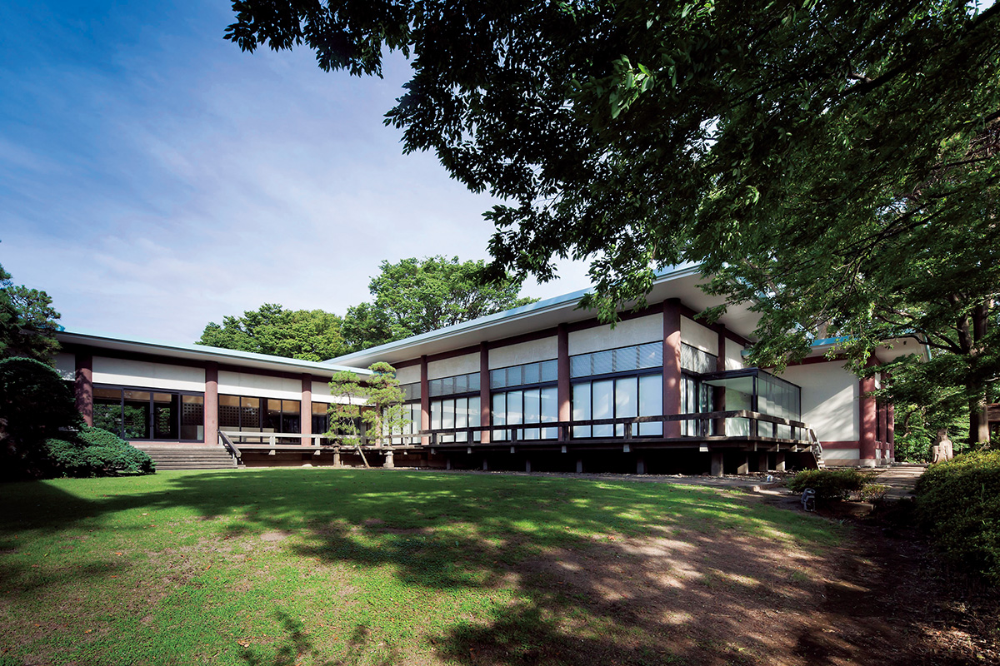
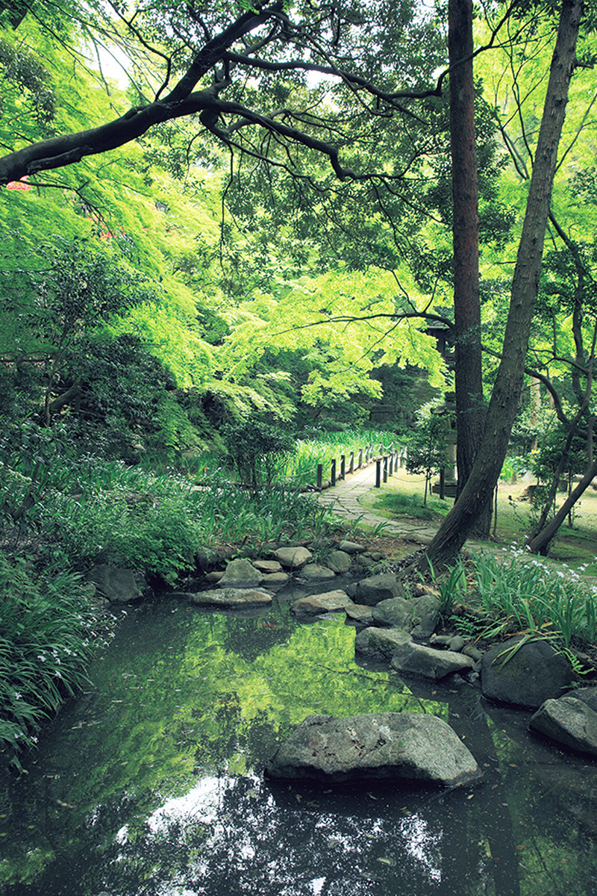
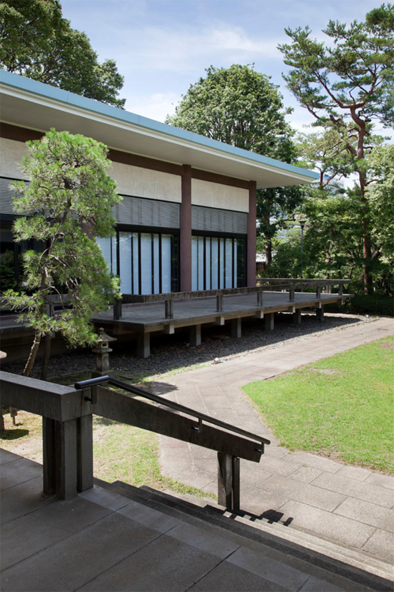
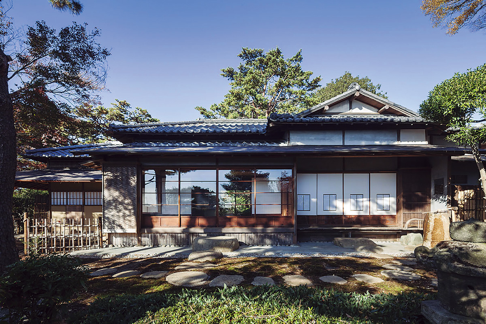
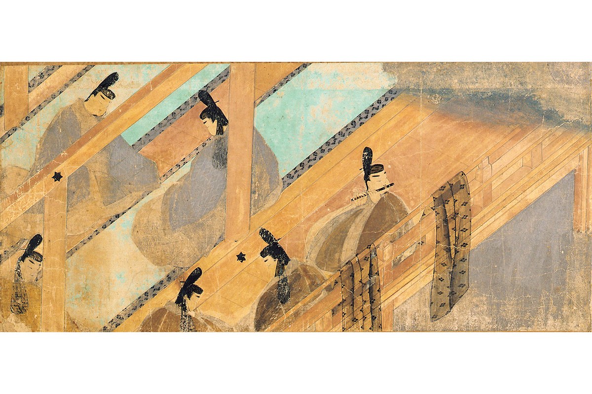

Токио · Сэтагая · музей
Музей Гото в Каминогэ: «Повесть о Гэндзи» и здание в духе дворцов эпохи Хэйан

В выходной день в Токио можно отправиться по музеям: их в городе множество, и в некоторых интересно не только собрание, но и здание или сад. Музей Гото в квартале Каминогэ района Сэтагая показывает старое японское и восточное искусство в здании, которое напоминает дворцы эпохи Хэйан.
История
Коллекция основателя группы Tokyu
Музей занимает участок около 20 000 квадратных метров. Его основу составила коллекция старинного японского и восточного искусства, которую собрал Кэйта Гото (1882–1959), предприниматель, заложивший основы группы компаний Tokyu. Музей открылся в 1960 году.
В собрании около 5000 предметов: живопись, утварь для чайной церемонии, керамика. Среди них 5 национальных сокровищ Японии и 50 важных культурных ценностей. К 2021 году музей объединился с библиотекой «Дайтокю кинэн бунко», где хранятся ещё 3 национальных сокровища и 33 важные культурные ценности, и работает вместе с ней.

Постоянной экспозиции здесь нет. В год музей устраивает шесть-семь выставок, из них одну-две специальные, и на каждой показывает лучшие вещи из коллекции в той или иной области.
Архитектура
Здание по мотивам «Повести о Гэндзи»
Главная драгоценность музея это свиток с иллюстрациями к «Повести о Гэндзи». В честь него здание проектировали с отсылками к синдэн-дзукури, стилю усадеб столичной знати эпохи Хэйан. Автор проекта Исоя Ёсида (1894–1974), архитектор, который соединил традиционный стиль чайных домиков сукия с современными материалами и приёмами.

«Здание архитектора Исои Ёсиды тоже стоит посмотреть. В октябре 2017 года главное здание и два чайных павильона, „Кокёро“ и „Фудзими-тэй“, внесли в реестр культурных ценностей страны. Чайные павильоны закрыты для посетителей»
сотрудник музея

Шедевр
Самый старый японский свиток с картинами

«Повесть о Гэндзи» написала в начале XI века придворная дама Мурасаки Сикибу. Свиток с картинами к ней появился в XII веке, примерно через 150 лет после самой повести. По словам музея, это самый старый из сохранившихся в Японии свитков эмакимоно, и он до сих пор передаёт изящный мир эпохи Хэйан. Свиток показывают обычно около десяти дней на «золотой неделе», весенних праздниках конца апреля и начала мая.
Музей Гото
- Адрес
- Токио, Сэтагая, Каминогэ, 3-9-25
- Телефон
- +81 50-5541-8600 (справочная служба)
- Часы работы
- 10:00–17:00, вход до 16:30
- Выходные
- понедельник (если это праздник, то следующий будний день), дни смены выставок, новогодние праздники, летний период технического обслуживания
- Цены / Вход
- взрослые 1000 иен, специальные выставки по отдельной цене
- Как добраться
- от станции Каминогэ (линия Оимати компании Tokyu) 5 минут пешком. Парковка небольшая.
Фото: Сигэо Огава.